Jocelyn's Journey
![]()
8/25/23: This week in Intro to Engineering, I learned about the engineering process and safety rules I have to follow in the class. The engineering process was confusing and had a lot to it, but the safety rules were not too bad since it was mostly common sense. Then I got started with what I need in this class (websites, google classroom...). Even though I didn't actually do anything and had someone doing it for me, I was confused and felt overwhelmed with how many new websites I had to use in this class. On Thursday, the class had a fun team-building activity. It was fun and I felt very accomplished when my team got the marble in the cup. On the last day of the week, Friday, I actually got started on the website my other classmates have been working on, which I was looking forward to.
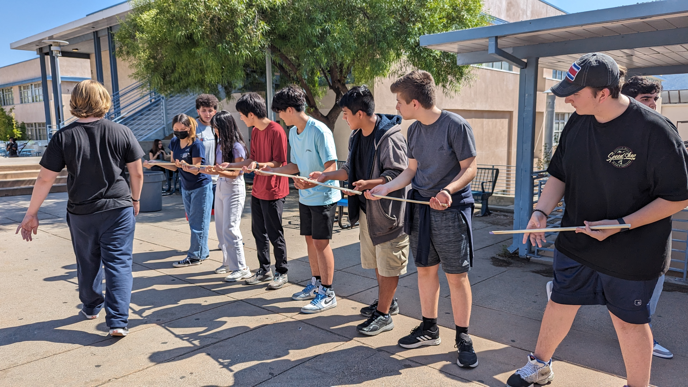
My Favorite Galbi-jjim Recipe!
9/1/23: This week in Intro to Engineering, I cooperated with my tablemates to use simple machines to create a Rube Goldberg machine. I learned to never give up on my creations and to just take a break to get my creativity running. I also learned the proper safety equipment and rules to use and follow. I wanted to implement the lever, pulley, and inclined plane into my Rube Goldberg machine, but I didn't know how to make it possible and creative. I also created my first Tinkercad creation, which was a pink toaster. I was a little embarrassed when Mr. Poole showed it to the class since I didn't know it was supposed to be accurate to my reference toaster...
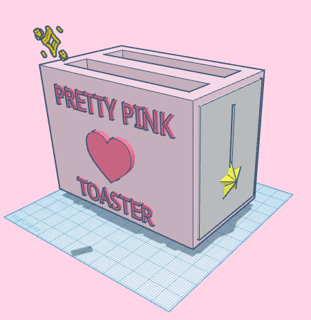
9/8/23: This week was fun. I think it was a great week, matter of fact! I learned how to make a 1:4 ratio for the machine my group and I are working on. Though it was confusing at first, I got a hang of the TinkerCad mechanics. Our Rube Goldberg machine will guide a ball to begin a series of machine activations (we are using all six of the simple machines!) to pop a balloon at the end. I think the most challenging part will be getting everything to stand and not fall, ruining the whole project.
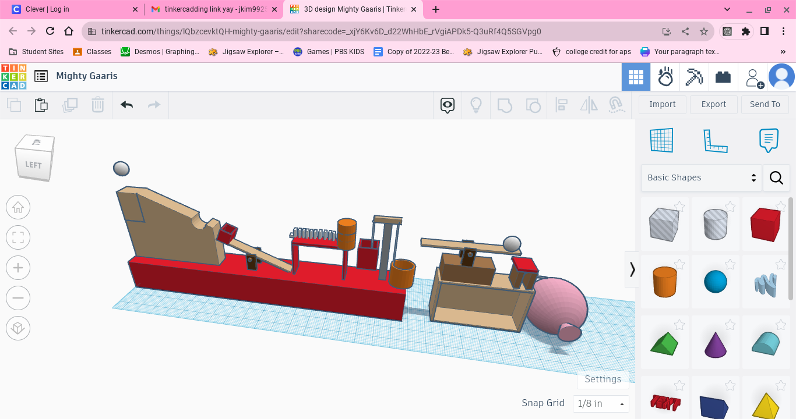
9/22/23: This week, we finished ou Rube Goldberg machine. My group's machine did not succeed in popping the balloon at the end, even after various attempts... I think we needed more force, but I'm not sure how we could've gotten that force. The router was broken, though, so for the rest of the week we listened to Mr. Poole's presentations and did challenges. In one challenge, we made something out of paper that had to be able to carry weight on top, but still float on water. Through that experiment, we learned more surface area is able to support more weight, as long as it's distributed equally, and still float on water. The next challenge we did was to accurately size an E, with measurements, and create it. However, Mr. Poole evilly and mischievously tricked us and made the E's randomized so I actually made someone else's E. We learned that accurate measurements are important to know how to make and read. Mr. Poole gave us a presentation on computer engineering and it was so confusing I even went cross-eyed. I don't know if I'll be interested in it any time soon... For the enirety of last week, my group and I worked on perfecting our machine through a process of trial and error. I made the lever (looked like a seesaw) and I am very proud of it.
 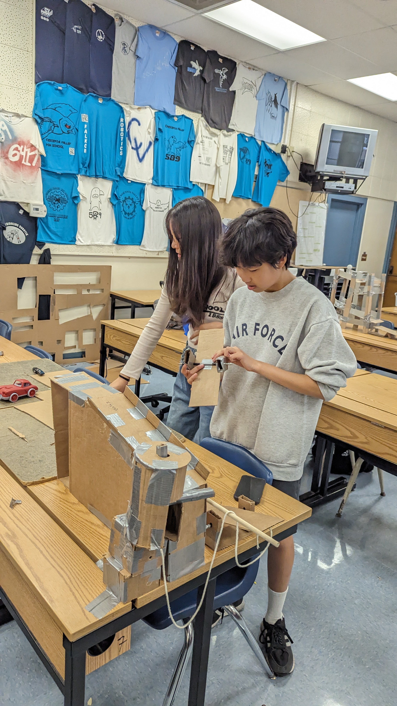
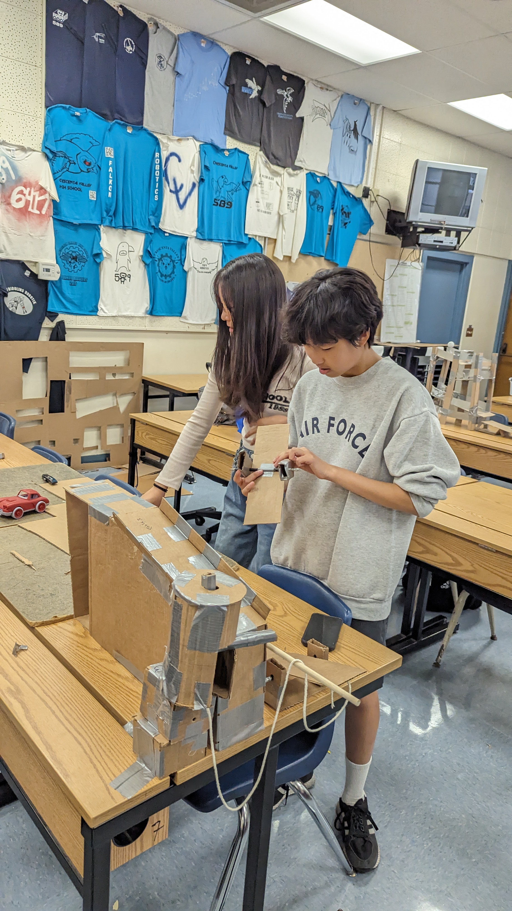
 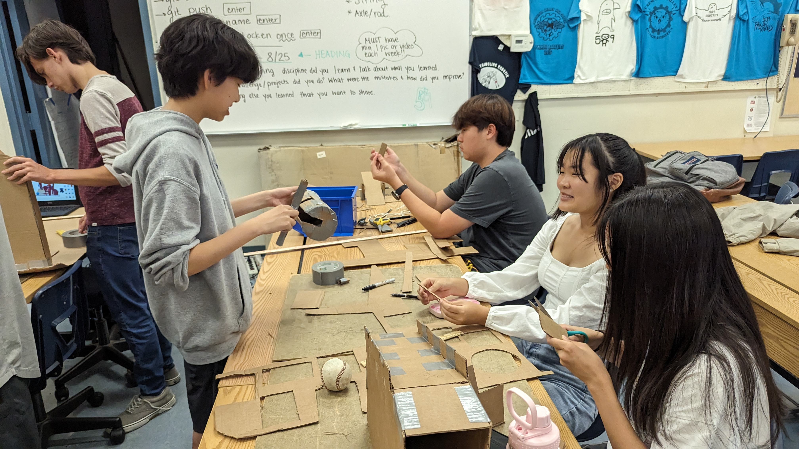
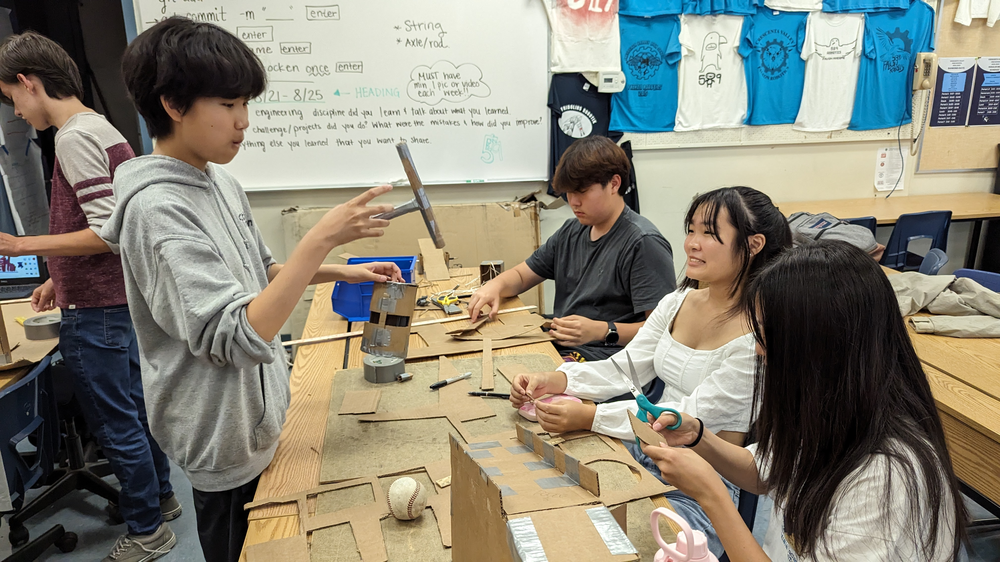
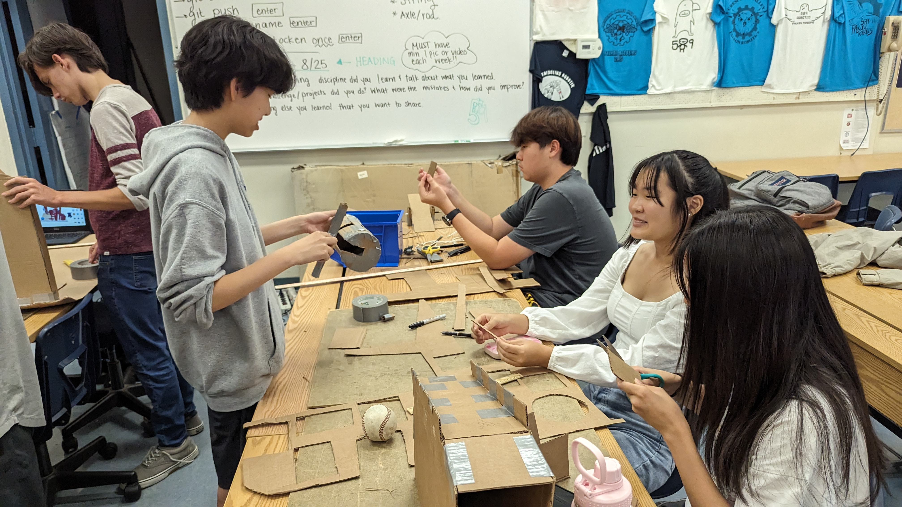
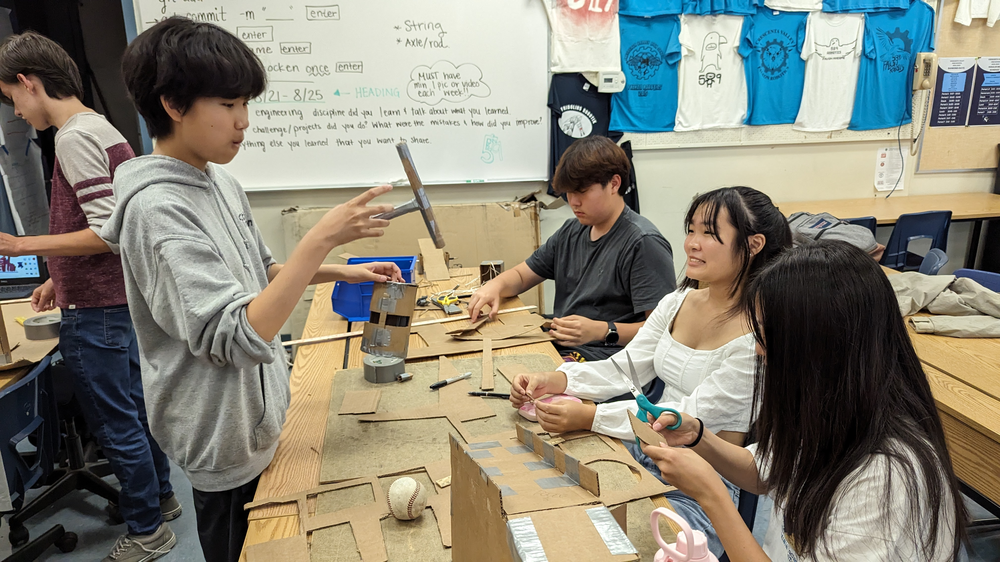
9/29/23: This week, I took apart/dissected a computer. It was complicating and it took me and my partner a little longer than the class, so we stayed after class to finish up. I learned about all the parts of the computer through this activity and I don't think computer engineering interests me. If I were to buy a good, customized computer, I think I'd just get someone else to do it for me. I learned that the RAM of the computer only holds temporary memory. I didn't know what any parts of the computer did specifically. I just knew that they worked together to make the computer work.
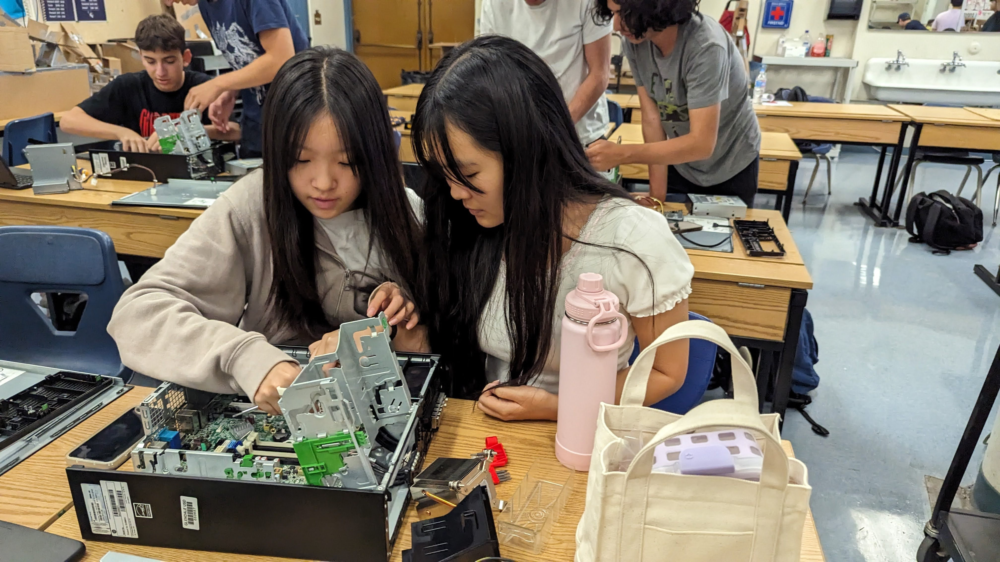
This weekend I might go to a Chuseok celebration with my mom. Besides that, I'll probably just catch up on homework and play some games.
This is my favorite youtube video:
10/6/23: This week, I learned that medical devices are a product of bioengineering. My partner and I made a hand that has strings to connect to her fingers so they move how her fingers move. Our hand was able to pick up an empty waterbottle, both vertically standing and horizontally. I think our hand would have been better if we connected the fingers' strings by making the ends of the strings rings so it won't easily disconnect from our fingers. This weekend I will be volunteering and won't go to HoCo unfortunately...
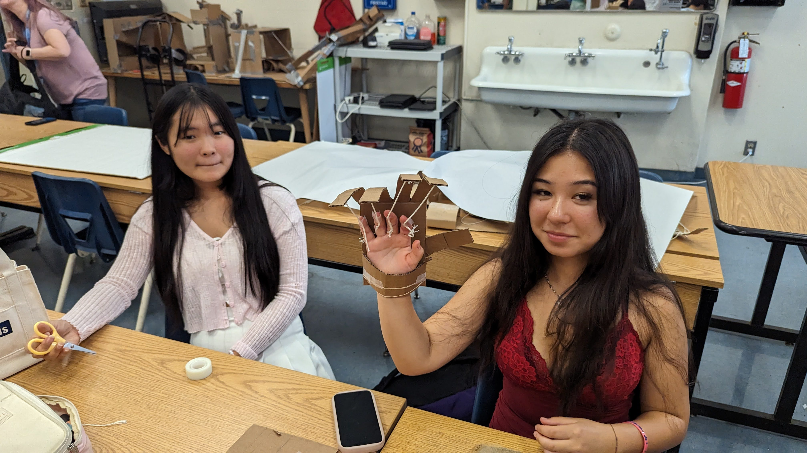
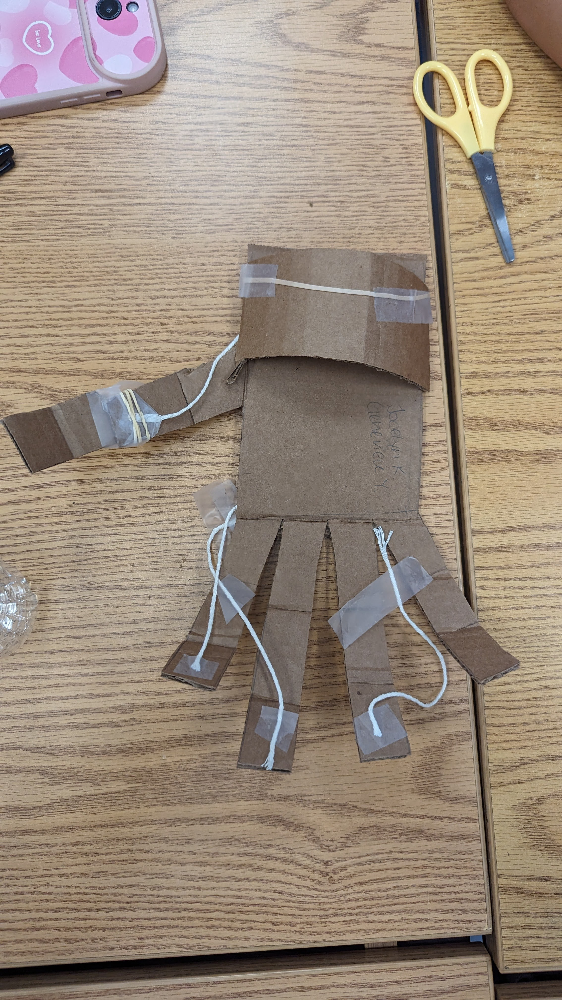